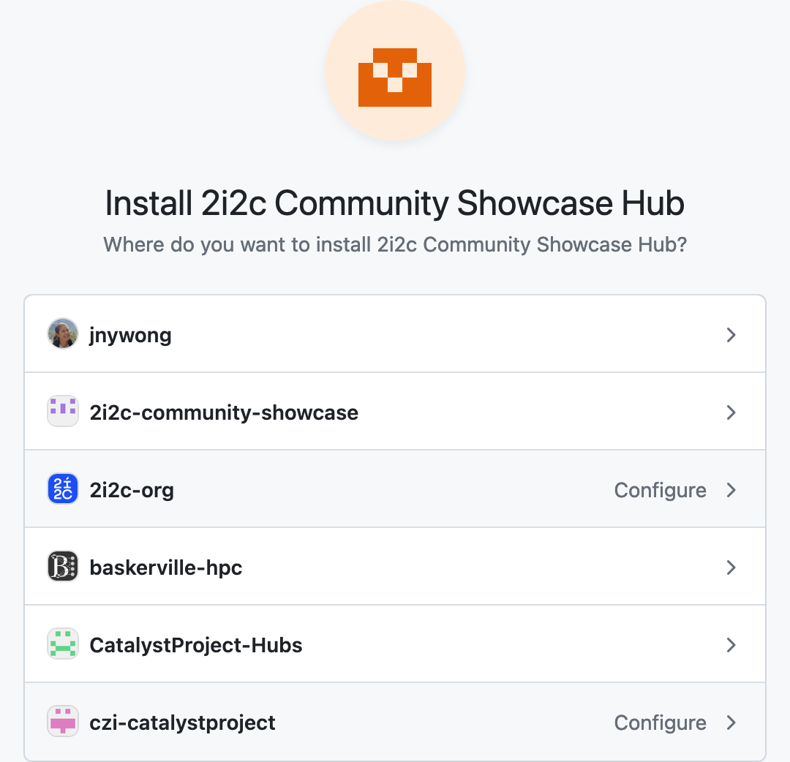
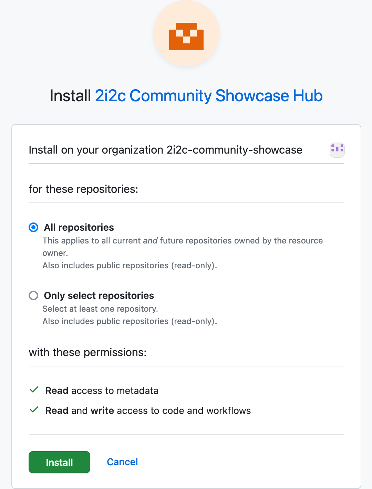

Move code in and out of the hub with GitHub#
The recommended way to move code in and out of the hub is with GitHub.
A typical pull request git workflow (GitHub flow docs) for collaborating on code consists of:
Pulling code from a remote repository on GitHub to a local repository on your hub
Creating a new branch from your local repository for working on your changes
Recording your changes with new commits to your branch
Pushing the branch with changes to the remote repository on GitHub
Repeating steps 3. and 4. until your work is ready to be reviewed
Creating a pull request on the remote repository on GitHub for review.
Note
Git clone using the HTTPS protocol and not SSH, since on the hub HTTPS will always work behind a firewall or proxy.
When you pull and push code to the remote repository on GitHub, you will need to provide your GitHub credentials.
Warning
We do not recommend entering your GitHub credentials (GitHub password, personal access tokens or otherwise) on any kind of shared infrastructure (e.g. private and public cloud, HPC, any remote machine) as this information will be at risk.
We highly advise using gh-scoped-creds for authentication on our hubs.
Using gh-scoped-creds#
Authorisation to pull and push to GitHub is handled with gh-scoped-creds.
Open a Terminal.
Run the command
gh-scoped-creds.The following prompt will appear
jovyan@jupyter-username:~/my-repo$ gh-scoped-creds You have 15 minutes to go to https://github.com/login/device and enter the code: XXXX-XXXX Waiting....
Copy the code from the prompt and paste into login/device as instructed.
Authorise the hub to access GitHub by clicking the green button with the label Authorize
. You should now be able to pull and push to GitHub from the hub without entering your credentials.
Authorisation will automatically expire after 8 hours (or when your JupyterHub server stops), and you’ll have to repeat these steps to renew.
Hint
If you receive a Permission denied error after following these steps, then gh-scoped-creds has not been enabled for your hub. Please contact your hub administrator to request this feature.
Enabling gh-scoped-creds for your hub#
There are some extra steps for Hub Administrators to enable gh-scoped-creds for their hub (requires GitHub organisation owner permissions).
Check that
gh-scoped-credsis not already enabled for your hub by opening a Terminal and runningjovyan@jupyter-username:~$ echo $GH_SCOPED_CREDS_CLIENT_ID
If this returns nothing, then follow the next step. If this returns a client ID of the form
Iv1.xxxxxxxxxxxxxxxx, then go to Step 3.Send a ticket to the 2i2c support desk and log a feature request for
gh-scoped-creds. 2i2c will create a GitHub App and update the hub configuration to make theGH_SCOPED_CREDS_CLIENT_IDandGH_SCOPED_CREDS_APP_URLenvironment variables available in your hub.Install the GitHub App to your GitHub organisation (requires GitHub organisation owner permissions).
Navigate to the GitHub App URL provided by 2i2c, which looks like
https://github.com/apps/<gh-app-name>.Click on the grey Configure button to install the GitHub app.
Select the GitHub organisation that you would like to enable
gh-scoped-credsforChoose whether to enable
gh-scoped-credsfor all repositories in your organisation or for only specific repositories, and check thatRead and write access to codeis enabled.Click the green button labelled Install.
gh-scoped-credsis now enabled for your hub.
{kind=link}
{kind=link}
Note
If you wish to review the GitHub App settings, then you can locate your organization’s installed apps at https://github.com/organizations/<your-org-name>/settings/installations.